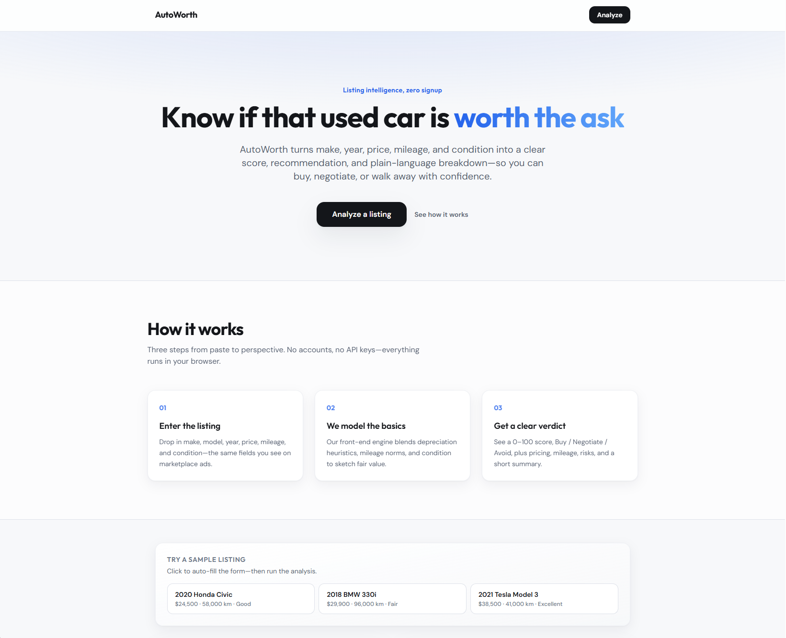
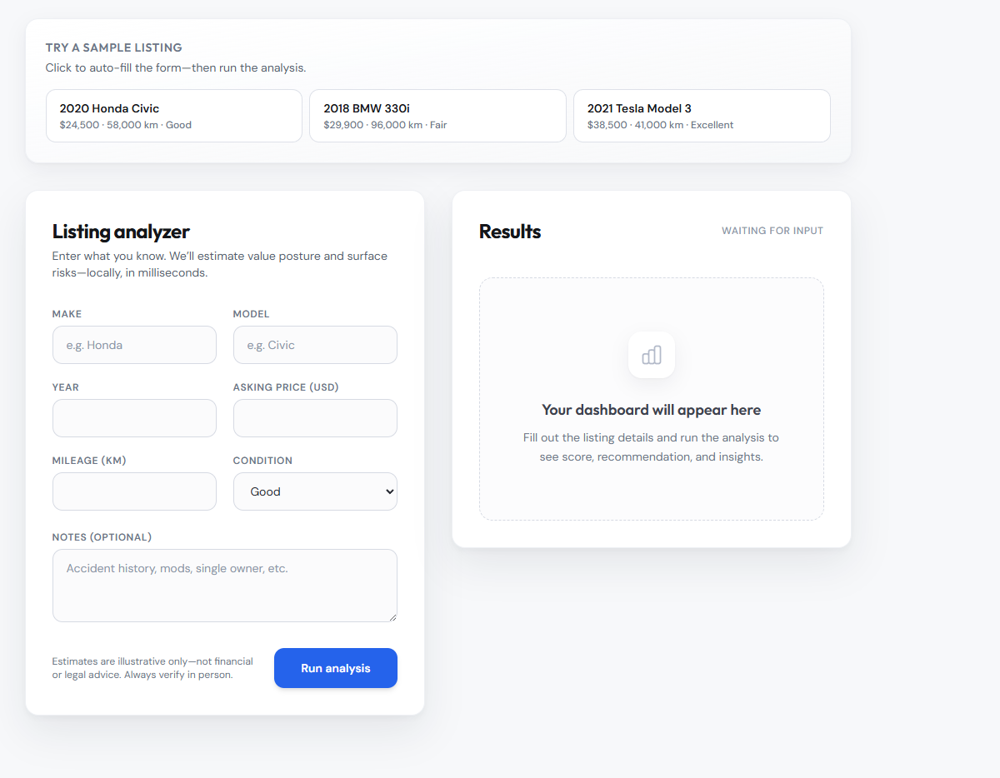

The code sample is illustrative of the idea—branch on signals, then assemble a plan object the UI can render. The point for the case study is traceability: outputs should map to inputs a buyer can re-check.
Design case study
AutoWorth
A listing-first assistant that reads price, mileage, and risk signals together—so “good deal or walk away?” is answerable before you open ten browser tabs.

Project links
Why this exists
Problem
Used listings mix signal and noise: asking price, mileage, vague condition lines, and inconsistent seller language. Buyers bounce between calculators and gut feel, then either overpay or walk away from a fine car because the cognitive load was too high in the moment.
AutoWorth targets the decision moment: compress the listing into a small set of indicators and a clear recommendation state—not a spreadsheet disguised as a web page.
Intent
Goals
- Fast verdict — Make buy / negotiate / avoid legible without reading every field twice.
- Comparable structure — Present price, mileage, and risk in the same layout across listings.
- Honest limits — Do not pretend the app inspects the car; frame outputs as interpretation of what was posted.
- Prototype depth — Enough logic in the UI to demo tradeoffs, not a production pricing engine.
Ownership
Role & scope
What I owned
Layout for listing intake, score and recommendation presentation, and how secondary risks sit relative to the headline verdict.
Scope & constraints
In scope: front-end analysis presentation, responsive layout, demo deployment.
Out of scope: VIN history integrations, dealer CRM, or actuarial-grade valuation models.
How the work moved
Process overview
Decision tools need a clear order: capture inputs, show intermediate signals, then surface the recommendation so users can sanity-check before trusting it.
- 01Frame — List which fields actually change a buyer’s mind on Classifieds sites.
- 02Model UI — Map fields to a score + narrative chips users can scan.
- 03Design hierarchy — Keep the verdict visible while scrolling supporting detail.
- 04Refine — Tighten spacing and labels after running real sample listings through the UI.
Framing
Research & insights
Informal review of listing patterns on common marketplaces and a few think-alouds with friends shopping used cars—not formal research.
- People compare asking price vs. gut “normal” before anything else.
- Mileage relative to age triggers suspicion fast when it is out of band.
- Risk language works better as short flags than long paragraphs.
Intentional choices
Key design decisions
-
Verdict beside inputs
Decision: Keep the recommendation and score adjacent to the listing summary, not on a second page.
Why: Buyers constantly cross-check numbers; splitting view increases error.
Usability: Less eye travel between price, mileage, and outcome.
-
Discrete recommendation states
Decision: Use explicit buy / negotiate / avoid language instead of a vague gradient.
Why: The job is a decision, not a mood board.
Usability: Easier to act on under time pressure.
-
Risk chips, not essays
Decision: Surface red flags as compact tags with optional expansion later.
Why: Long warnings get skimmed or ignored.
Usability: Critical signals register in peripheral vision.
-
Single primary analysis action
Decision: One clear CTA to run analysis after fields are present.
Why: Multiple paths create “did it run?” confusion in demos.
Usability: Predictable flow for first-time viewers and graders.
Structure
From listing fields to a defensible read
The product is rule-driven interpretation: normalize what the seller posted, compare a few heuristics, then map outcomes to UI states users already understand. The design task is to expose enough of that chain to feel credible without exposing so much math that the screen becomes homework.
Heuristic sketch
const signals = parseListing(input);
const value = scoreAgainstNorms(signals);
const verdict = pickVerdict(value, signals.risks);
return { value, verdict, signals };Parse → Score → Verdict
Evolution
Iteration & refinement
First layouts buried the verdict under charts. Later versions pulled the recommendation and score into a stable top band so scrolling only revealed supporting evidence, not the answer itself.
Outcome
Final product
- Value read — Single number backed by the fields that moved it.
- Negotiation cue — When the UI suggests negotiate, supporting reasons stay nearby.
- Risk surfacing — Short flags for issues that would change a test drive plan.
Implementation
Build snapshot
Tailwind-heavy layout kept iteration fast: spacing tokens made it cheap to try alternate hierarchies when sample listings exposed weak alignment between numbers and labels.

Closing
Reflection & next steps
Insight: The design risk was false precision—pretty charts that imply certainty. Keeping copy grounded in “posted data” and pairing scores with visible inputs did more for trust than any single visual treatment.
Tradeoff: Simple heuristics are easy to demo but would not survive every market; that is a known ceiling for this assignment.
Next: Test with real listings from two price bands; add history or title flags if data becomes available; stress-test mobile with long seller descriptions.